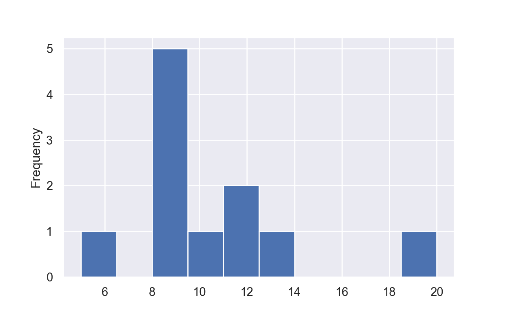

library(reticulate)
use_condaenv('ethique_env')
Privacy et Robusness
Dans ce notebook je vais prsenter les diffrentes attaques prsentes dans la trousse outils dIMB Adversarial Robusteness 360 :
- Evasion
- Poisoning
- Inference and Inversion
- Model Extraction
Pour illustrer ces diffrentes attaques nous allons utilis la base de donnes :
- German Credit (lien)
Le modle que nous allons attaquer est une rgression logisitique en utilisant la librairie scikit learn
import matplotlib.pyplot as plt
import pandas as pd
import numpy as np
from tqdm.notebook import tqdm
from itertools import product, combinations
from copy import deepcopy
from sklearn import model_selection
from sklearn.preprocessing import StandardScaler
from sklearn.preprocessing import OneHotEncoder, FunctionTransformer
from sklearn.linear_model import LogisticRegression, LinearRegression
from sklearn.metrics import accuracy_score, confusion_matrix, plot_confusion_matrix
from sklearn.compose import ColumnTransformer
from sklearn.pipeline import Pipeline
from sklearn.ensemble import RandomForestClassifier
import seaborn as sns
sns.set_theme(style='darkgrid')seed = 2021Prpration des donnes et cration du modle cible
credit = pd.read_csv("data/german_credit_prepared.csv", sep=",", engine="python")
y = credit['default']
X = credit.drop(columns="default")
# Dfinie quelles colones sont categorielles et quelles sont continue
variables_cat = [col for col in X.columns if credit[col].dtype==object]
variables_ord = [col for col in X.columns if credit[col].dtype==int]
preprocess = ColumnTransformer(
transformers=[
('cat', OneHotEncoder(drop='first'), variables_cat),
('ord', StandardScaler(), variables_ord)
])
model = Pipeline(
[
('preprocession', preprocess),
('logreg', LogisticRegression())
]
)X_train, X_test, y_train, y_test = model_selection.train_test_split(X, y, test_size=0.20, random_state=seed)
logreg = model.fit(X_train, y_train)def mesure_reg(reg, X_test, y_test):
y_test_pred = reg.predict(X_test)
cm = confusion_matrix(y_test, y_test_pred)
total=sum(sum(cm))
sensitivity_recall = cm[0,0]/(cm[0,0]+cm[1,0])
print('Sensitivity_recall : ',sensitivity_recall )
Specificity = cm[1,1]/(cm[1,1]+cm[0,1])
print('Specificity: ', Specificity)
precision = cm[0,0]/(cm[0,0]+cm[0,1])
print('Precision: ', precision)
accuracy =(cm[0,0]+cm[1,1])/(cm[0,0]+cm[0,1]+cm[1,0]+cm[1,1])
print('Accuracy: ', accuracy)
title = 'Matrice de confusion de la rgression logistique'
disp = plot_confusion_matrix(reg,
X_test,
y_test,
cmap=plt.cm.Blues)
disp.ax_.set_title(title)
plt.show()mesure_reg(logreg, X_test, y_test)Sensitivity_recall : 0.8013245033112583
Specificity: 0.6122448979591837
Precision: 0.8642857142857143
Accuracy: 0.755Evasion
On va chercher les variables non vrifiables et les modifies jusqu ce que lindividu refus soit accept.
On voit quil ny a que trs peu de variables que lon peut modifier et qui ne soit pas vrifiable. Cest une base de donnes pour crdit ce qui explique cela. On voit quil y a : - purpose : correspond la finalit du prt - personal_status : la condition de vie en couple
On a galement des variables difficilements vrifiables : - present_emp_since : depuis quand la personne travail son poste - job : le type de travaille de la personne - people_under_maintenance : le nombre de personne charge
On choisit ensuite une personne alatoirement parmis les personnes refuses :
#np.random.seed(seed)
idx_ref = np.where(logreg.predict_proba(X)[:, 1] > 0.5)[0]
idx = np.random.choice(idx_ref)
#idx = 153 # --> juste besoin de changer le but du prt : 'education', '(vacation - does not exist?)', 'car (new)'
#idx = 232 #--> pas possible de le faire passer
X.iloc[idx]account_check_status 0 <= ... < 200 DM
duration_in_month 24
credit_history delay in paying off in the past
purpose car (new)
credit_amount 1965
savings unknown/ no savings account
present_emp_since 1 <= ... < 4 years
installment_as_income_perc 4
sex female
personal _status divorced
other_debtors none
present_res_since 4
property if not A121/A122 : car or other, not in attrib...
age 42
other_installment_plans none
housing rent
credits_this_bank 2
job skilled employee / official
people_under_maintenance 1
telephone yes, registered under the customers name
foreign_worker yes
Name: 591, dtype: objectlogreg.predict_proba(X.iloc[idx].to_frame().transpose())[:, 1]array([0.60792326])var_values = ['purpose', 'personal _status', 'present_emp_since', 'job', 'people_under_maintenance']
fix_values = [x for x in X.columns if x not in var_values]
all_values = [X[col].unique() for col in var_values]
prod = list(product(*all_values)) #produit cartsien
all_X = pd.DataFrame([X.iloc[idx][fix_values].tolist() + list(p) for p in prod],
columns=fix_values + var_values)
all_X = all_X[X.columns]
all_X['proba'] = logreg.predict_proba(all_X)[:, 1]all_X.sort_values('proba', inplace=True)
valid_X = all_X[all_X.proba < 0.5]
# On calcule le nombre de variable qu'on a du modifier
valid_X = valid_X.assign(diff = [(valid_X.iloc[i][var_values] == X.iloc[idx][var_values]).value_counts()[False]
for i in range(len(valid_X))])
valid_X.sort_values(by=['diff', 'proba'], inplace=True)
valid_X.head(5) account_check_status duration_in_month ... proba diff
528 0 <= ... < 200 DM 24 ... 0.210769 1
48 0 <= ... < 200 DM 24 ... 0.389484 1
1008 0 <= ... < 200 DM 24 ... 0.416004 1
1128 0 <= ... < 200 DM 24 ... 0.419004 1
368 0 <= ... < 200 DM 24 ... 0.440051 1
[5 rows x 23 columns]def print_diff(new_comb, old_comb):
diff_comb = (new_comb != old_comb)
diff_pd = pd.DataFrame([old_comb[diff_comb], new_comb[diff_comb]], index=['old', 'new']).transpose()
max_ind = max([len(x) for x in diff_pd.index])
max_old = max([len(x) for x in diff_pd.old])
max_new = max([len(x) for x in diff_pd.new])
for i in new_comb[diff_comb].index :
print(f'{i:<{max_ind}} : {diff_pd.old[i]:<{max_old}} --> {diff_pd.new[i]:<{max_new}}')print_diff(valid_X.iloc[0][var_values], X.iloc[idx][var_values])purpose : car (new) --> car (used)X_ref = X.loc[idx_ref]new = False
if new:
all_X = pd.DataFrame([X.iloc[idx][fix_values].tolist() + list(p) + [idx] for idx in tqdm(idx_ref) for p in prod],
columns=fix_values + var_values + ['index_old'])
all_X = all_X[list(X.columns) + ['index_old']]
all_X['proba'] = logreg.predict_proba(all_X.drop('index_old', axis=1))[:, 1]
np.savez_compressed('data/privacy/all_X.npz', data=np.array(all_X), columns=all_X.columns)
else:
file = np.load('data/privacy/all_X.npz', allow_pickle=True)
all_X = pd.DataFrame(file['data'], columns=file['columns'])
X_false = X.loc[idx_ref]
X_false = X_false.assign(proba = logreg.predict_proba(X_false)[:, 1])
X_false = X_false.assign(proba_min = all_X.groupby('index_old').apply(lambda x: x.sort_values('proba').head(1)) \
.set_index('index_old').proba)len(X_false[X_false.proba_min < 0.5])212(X_false.proba - X_false.proba_min).plot.hist()<AxesSubplot:ylabel='Frequency'>plt.show()X_false[X_false.proba_min >= 0.5] account_check_status duration_in_month ... proba proba_min
29 < 0 DM 60 ... 0.864682 0.52768
95 0 <= ... < 200 DM 54 ... 0.930303 0.664193
334 < 0 DM 24 ... 0.866776 0.519487
374 0 <= ... < 200 DM 60 ... 0.950675 0.706918
538 < 0 DM 48 ... 0.940321 0.641234
650 < 0 DM 48 ... 0.819160 0.506383
714 0 <= ... < 200 DM 60 ... 0.930525 0.6976
728 0 <= ... < 200 DM 48 ... 0.925651 0.524549
832 < 0 DM 45 ... 0.874828 0.549941
927 < 0 DM 48 ... 0.772503 0.723198
973 < 0 DM 60 ... 0.937913 0.725362
[11 rows x 23 columns]Poisoning
On remarque quil y a certaine personne pour qui la modification de variables difficilement vrifiables nest pas suffisant. On passe donc la deuxime attaque poisoning. On a vu prcdemment que lindividu 232 fait partie des personnes ne pouvant pas utiliser la triche pour pouvoir tre accept.
On va rajouter sa ligne dans la base de donne dentrainement et voir si cela a un impact.
y = credit['default']
X = credit.drop(columns="default")
ind = X.iloc[[95]]ind account_check_status ... foreign_worker
95 0 <= ... < 200 DM ... yes
[1 rows x 21 columns]n = 9
X_train_pois = X_train.append([ind]*n, ignore_index=True)
y_train_pois = pd.Series(list(y_train) + [0]*n)logreg = model.fit(X_train, y_train)
mesure_reg(logreg, X_test, y_test)Sensitivity_recall : 0.8013245033112583
Specificity: 0.6122448979591837
Precision: 0.8642857142857143
Accuracy: 0.755
logreg.predict_proba(ind)[0,1]0.9303033801912368logreg_pois = model.fit(X_train_pois, y_train_pois)
mesure_reg(logreg_pois, X_test, y_test)Sensitivity_recall : 0.7806451612903226
Specificity: 0.5777777777777777
Precision: 0.8642857142857143
Accuracy: 0.735logreg_pois.predict_proba(ind)[0,1]0.47122487407898306On automatise la recherche du nombre minimum de copie pour passer.
def min_pois(ind):
n = 0
X_train_pois = X_train
y_train_pois = y_train
while model.fit(X_train_pois, y_train_pois).predict_proba(ind)[0,1] > 0.5:
n += 1
X_train_pois = X_train_pois.append([ind], ignore_index=True)
y_train_pois = pd.Series(list(y_train_pois) + [0])
return nmin_pois(ind)9On regarde la distribution pour les personnes qui ont besoin du poisoning
list_min = X_false[X_false.proba_min > 0.5].drop(columns=['proba', 'proba_min']).apply(lambda x: min_pois(x.to_frame().transpose()), axis=1)list_min.plot.hist()<AxesSubplot:ylabel='Frequency'>plt.show()
On peut coupler les deux premires attaques pour avoir encore moins de copie rajouter.
ind_best_comb = all_X[all_X['index_old'] == ind.index[0]].sort_values(by='proba').head(1) \
.drop(['index_old', 'proba'], axis=1)print_diff(ind_best_comb.iloc[0], ind.iloc[0])purpose : business --> car (used)
present_emp_since : ... < 1 year --> 4 <= ... < 7 years
job : skilled employee / official --> management/ self-employed/ highly qualified employee/ officern = 2
X_train_pois_best = X_train.append([ind_best_comb]*n, ignore_index=True)
y_train_pois_best = pd.Series(list(y_train) + [0]*n)logreg_pois_best = model.fit(X_train_pois_best, y_train_pois_best)
mesure_reg(logreg_pois_best, X_test, y_test)Sensitivity_recall : 0.7894736842105263
Specificity: 0.5833333333333334
Precision: 0.8571428571428571
Accuracy: 0.74logreg_pois_best.predict_proba(ind_best_comb)[0,1]0.4932345933281425On automatise
def min_pois_best_comb(ind, print_chan=True):
ind_best_comb = all_X[all_X['index_old'] == ind.index[0]].sort_values(by='proba').head(1) \
.drop(['index_old', 'proba'], axis=1)
print_diff(ind_best_comb.iloc[0], ind.iloc[0]) if print_chan else ...
n = 0
X_train_pois = X_train
y_train_pois = y_train
while model.fit(X_train_pois, y_train_pois).predict_proba(ind_best_comb)[0,1] > 0.5:
n += 1
X_train_pois = X_train_pois.append([ind_best_comb], ignore_index=True)
y_train_pois = pd.Series(list(y_train_pois) + [0])
return nmin_pois_best_comb(ind)purpose : business --> car (used)
present_emp_since : ... < 1 year --> 4 <= ... < 7 years
job : skilled employee / official --> management/ self-employed/ highly qualified employee/ officer
2# %%capture
list_min_best_comb = X_false[X_false.proba_min > 0.5].apply(lambda x:
min_pois_best_comb(x.to_frame().transpose(), False), axis=1)list_min_best_comb.plot.hist()<AxesSubplot:ylabel='Frequency'>plt.show()Model extraction
Le but de cette attaque est de rccuprer les poids dun modle. On suppose que lon connait larchitechure : regression logistique.
Ce que lon va faire cest crer des nouvelles entres que lon va donn notre modle blackbox qui va les lablis puis on va utilser ces labels pour entrainer notre nouveau modle.
def new_entries(n):
list_entries = []
for col in X.columns:
list_entries.append(np.random.choice(X[col].unique(), n, p=(X[col].value_counts(normalize=True)).to_numpy()))
return pd.DataFrame(np.array(list_entries).transpose(), columns=X.columns)n = len(X_train)
X_new = new_entries(n)
y_new = logreg.predict(X_new)mesure_reg(model.fit(X_train, y_train), X_test, y_test)Sensitivity_recall : 0.8013245033112583
Specificity: 0.6122448979591837
Precision: 0.8642857142857143
Accuracy: 0.755
mesure_reg(model.fit(X_new, y_new), X_test, y_test)Sensitivity_recall : 0.7922077922077922
Specificity: 0.6086956521739131
Precision: 0.8714285714285714
Accuracy: 0.75def new_entries_unif(n):
list_entries = []
for col in X.columns:
list_entries.append(np.random.choice(X[col].unique(), n))
return pd.DataFrame(np.array(list_entries).transpose(), columns=X.columns)n = len(X_train)
X_new_unif = new_entries_unif(n)
logreg = model.fit(X_train, y_train)
y_new_unif = logreg.predict(X_new_unif)mesure_reg(model.fit(X_new_unif, y_new_unif), X_test, y_test)Sensitivity_recall : 0.8053691275167785
Specificity: 0.6078431372549019
Precision: 0.8571428571428571
Accuracy: 0.755
Mesure de distance : - laccuracy : mesure de lefficacit de lapprentissage - la prcision : mesure de la distance du modle original
y_hat = model.fit(X_new, y_new).predict(X_test)
y_ori = model.fit(X_train, y_train).predict(X_test)
prec = (y_ori == y_hat).astype(int).sum()/len(y_ori)
accu_diff = accuracy_score(y_test, y_ori) - accuracy_score(y_test, y_hat)
print(f"Prcision : {prec:.3f}, Diffrence d'accuracy : {accu_diff:.3f}")Prcision : 0.905, Diffrence d'accuracy : 0.005y_hat = model.fit(X_new_unif, y_new_unif).predict(X_test)
y_ori = model.fit(X_train, y_train).predict(X_test)
prec = (y_ori == y_hat).astype(int).sum()/len(y_ori)
accu_diff = accuracy_score(y_test, y_ori) - accuracy_score(y_test, y_hat)
print(f"Prcision : {prec:.3f}, Diffrence d'accuracy : {accu_diff:.3f}")Prcision : 0.960, Diffrence d'accuracy : 0.000Trouver un modle capable de surapprendre
def add_relations(df_orig):
df = df_orig.copy()
for i, j in combinations(variables_cat, 2):
df[i + j] = df[i] + df[j]
return df
new_variables_cat = variables_cat + [i + j for i, j in combinations(variables_cat, 2)]
# On normalise les colones dans leur noms
all_values = [X[col].unique() for col in variables_cat]
categorie_rel = list(combinations(all_values, 2))
categorie_name = [a + b for a,b in combinations(variables_cat, 2)]
categorie_values = [[a + b for a,b in list(product(*x))] for x in categorie_rel]
preprocessor_comb = ColumnTransformer(
transformers=[
('cat', OneHotEncoder(categories=all_values+categorie_values, drop='first', sparse=False),
new_variables_cat),
('ord', StandardScaler(), variables_ord)
])
model_over = Pipeline(
steps=[
('relations', FunctionTransformer(add_relations)),
('preprocession', preprocessor_comb),
('logreg', LogisticRegression(max_iter=200))
]
)# #%timeit model.fit(X_train, y_train)
#print(f"validation : {model.score(X_test, y_test):.3f}, score : {model.score(X_train, y_train):.3f}")
print("""39.1 ms 2.89 ms per loop (mean std. dev. of 7 runs, 10 loops each)
validation : 0.735, score : 0.787""")39.1 ms 2.89 ms per loop (mean std. dev. of 7 runs, 10 loops each)
validation : 0.735, score : 0.787# #%timeit model_over.fit(X_train, y_train)
#print(f"validation : {model_over.score(X_test, y_test):.3f}, score : {model_over.score(X_train, y_train):.3f}")
print("""216 ms 21.8 ms per loop (mean std. dev. of 7 runs, 1 loop each)
validation : 0.725, score : 0.958""")216 ms 21.8 ms per loop (mean std. dev. of 7 runs, 1 loop each)
validation : 0.725, score : 0.958On a donc de loverfit
Proprety inference
On va chercher a reccuprer la proportion homme/femme de la base de donne dentrainement
dist = np.random.normal(np.random.choice([0.4, 0.6], size=1000), scale=0.05)
plt.hist(dist, density=True, bins=50)(array([0.10510399, 0.10510399, 0.42041596, 0.84083192, 0.42041596,
0.42041596, 0.52551995, 0.9459359 , 1.15614388, 2.83780771,
1.89187181, 2.52249575, 3.25822367, 3.15311968, 4.51947154,
3.04801569, 4.83478351, 3.36332766, 4.09905559, 2.83780771,
1.89187181, 3.15311968, 1.26124787, 1.9969758 , 1.47145585,
1.05103989, 0.84083192, 1.05103989, 1.26124787, 1.78676782,
2.73270372, 2.83780771, 3.04801569, 3.04801569, 3.36332766,
3.88884761, 4.41436756, 4.30926357, 3.15311968, 2.9429117 ,
2.9429117 , 2.73270372, 1.9969758 , 1.89187181, 1.36635186,
1.36635186, 0.52551995, 0.63062394, 0.52551995, 0.31531197]), array([0.25426357, 0.26377796, 0.27329234, 0.28280673, 0.29232112,
0.3018355 , 0.31134989, 0.32086428, 0.33037866, 0.33989305,
0.34940744, 0.35892182, 0.36843621, 0.3779506 , 0.38746498,
0.39697937, 0.40649376, 0.41600814, 0.42552253, 0.43503692,
0.4445513 , 0.45406569, 0.46358008, 0.47309446, 0.48260885,
0.49212324, 0.50163762, 0.51115201, 0.5206664 , 0.53018079,
0.53969517, 0.54920956, 0.55872395, 0.56823833, 0.57775272,
0.58726711, 0.59678149, 0.60629588, 0.61581027, 0.62532465,
0.63483904, 0.64435343, 0.65386781, 0.6633822 , 0.67289659,
0.68241097, 0.69192536, 0.70143975, 0.71095413, 0.72046852,
0.72998291]), <BarContainer object of 50 artists>)plt.show()def new_entries_homme(n, prop=False):
list_entries = []
for col in X.columns:
if col == 'sex':
q = np.clip(np.random.normal(np.random.choice([0.4, 0.6]), scale=0.05), 0, 1)
list_entries.append(np.random.choice(['male', 'female'], n, p=[q, 1-q]))
else:
if prop:
list_entries.append(np.random.choice(X[col].unique(), n, p=(X[col].value_counts(normalize=True)).to_numpy()))
else:
list_entries.append(np.random.choice(X[col].unique(), n))
return pd.DataFrame(np.array(list_entries).transpose(), columns=X.columns)new_entries_homme(1000).sex.value_counts(normalize=True)female 0.546
male 0.454
Name: sex, dtype: float64On se place dans le cas suivant :
On a un modle model_secret qui la structure de model_chose et qui est entrain sur une base de donnes : X_train_secret, et une lablisation : y_train_secret. On cherche savoir si la base de donnes secrte avait une majorit dhomme.
Pour se faire on va procder de la manire suivante :
Comme on na pas accs la base de donnes X_train_secret on va devoir crer une liste de bases : list_data_X qui est une liste de base gnre avec la fonction : new_entries_homme qui gnre de nouvelles entres uniformment pour toutes les variables sauf sex o la proportion dhommes est tire selon une normale centr en 0,6 ou 0,4 et de cart type 0,05. On utilise le modle model_secret pour labliser les nouvelles entres que lon garde dans la variable liste_data_y. (tape de model extraction)
Pour chaque nouvelle base de donnes on entraine un modle de la structure model_choisi et on rcupre les poids de ce modle. Tous ces poids forme la base data_meta_X. Cest une base de donnes o chaque entre \(i\) coorespond aux coefficients du modle entrain sur (list_data_X[i], list_data_y[i]).
On cre la lablisation de notre mta-modle data_meta_y en notant \(1\) sil y a plus dhomme que de femme dans le base de donnes list_data_X[i] et 0 sinon.
On va entrainer notre mta-modle qui est une rgression logstique sur (data_meta_X, data_meta_y)
On va finalement donner les coefficients de notre modle secret notre mta-modle et il va nous dire si le modle secret a t entrain sur une base de donnes avec une majorite dhomme (1) ou de femme (0).
FAIRE UN SCHMA
n_data = 300
n_entries = len(X_train)
X_train_secret = X_train
y_train_secret = y_train
prop = False
new = False
# Choisir si on veut utiliser le modle qui surapprend ou pas
model_choisi = model #model
name = '_overfit' if model_choisi == model_over else ''
prop_name = '_prop' if prop else '_unif'
model_secret = deepcopy(model_choisi.fit(X_train_secret, y_train_secret))
if new:
list_data_X = [new_entries_homme(n_entries, prop) for _ in tqdm(range(n_data))]
dist_homme = np.array([(x.sex.value_counts(normalize=True))['male'] for x in list_data_X])
list_data_y = model_secret.predict(pd.DataFrame(np.array(list_data_X).reshape(-1, 21),
columns=X.columns)).reshape(n_data, -1)
data_meta_X = [model_choisi.fit(list_data_X[i], list_data_y[i])['logreg'].coef_[0]
for i in tqdm(range(len(list_data_X)))]
np.savez_compressed(f'data/privacy/data{name}{prop_name}.npz',
data_meta=data_meta_X,
list_homme=dist_homme)
else:
file = np.load(f'data/privacy/data{name}{prop_name}.npz', allow_pickle=True)
data_meta_X = file['data_meta']
dist_homme = file['dist_homme']
data_meta_y = (dist_homme > 0.5).astype('int')Visualisation de la rpartition de la proportion dhommes dans les bases de donnes
plt.hist(dist_homme, density=True, bins=50)(array([0.74487896, 0.37243948, 0. , 0.74487896, 0.37243948,
3.35195531, 2.23463687, 2.23463687, 3.35195531, 2.97951583,
2.23463687, 4.46927374, 3.35195531, 2.23463687, 4.46927374,
2.60707635, 2.97951583, 2.23463687, 7.44878957, 0.74487896,
1.48975791, 1.11731844, 1.86219739, 1.48975791, 0. ,
1.86219739, 1.86219739, 2.23463687, 1.48975791, 0.74487896,
1.11731844, 2.97951583, 2.23463687, 2.23463687, 3.72439479,
2.60707635, 2.60707635, 5.95903166, 5.95903166, 2.97951583,
5.95903166, 1.48975791, 0.74487896, 1.86219739, 1.48975791,
1.11731844, 1.11731844, 0.74487896, 0. , 1.48975791]), array([0.2725 , 0.28145, 0.2904 , 0.29935, 0.3083 , 0.31725, 0.3262 ,
0.33515, 0.3441 , 0.35305, 0.362 , 0.37095, 0.3799 , 0.38885,
0.3978 , 0.40675, 0.4157 , 0.42465, 0.4336 , 0.44255, 0.4515 ,
0.46045, 0.4694 , 0.47835, 0.4873 , 0.49625, 0.5052 , 0.51415,
0.5231 , 0.53205, 0.541 , 0.54995, 0.5589 , 0.56785, 0.5768 ,
0.58575, 0.5947 , 0.60365, 0.6126 , 0.62155, 0.6305 , 0.63945,
0.6484 , 0.65735, 0.6663 , 0.67525, 0.6842 , 0.69315, 0.7021 ,
0.71105, 0.72 ]), <BarContainer object of 50 artists>)plt.show()Entrainement du mta-modle
X_train_meta, X_test_meta, y_train_meta, y_test_meta = model_selection.train_test_split(data_meta_X,
data_meta_y,
test_size=0.20)
meta_model = LogisticRegression(max_iter=200)
meta_model.fit(X_train_meta, y_train_meta)LogisticRegression(max_iter=200)confusion_matrix(y_test_meta, meta_model.predict(X_test_meta))array([[16, 15],
[14, 15]])l = []
X_train_meta_all, X_test_meta_all, y_train_meta_all, y_test_meta_all = model_selection.train_test_split(data_meta_X,
data_meta_y,
test_size=0.01)
for i in tqdm(range(100)):
X_train_meta, _, y_train_meta, _ = model_selection.train_test_split(X_train_meta_all,
y_train_meta_all,
test_size=0.20)
meta_model = LogisticRegression(max_iter=200)
meta_model.fit(X_train_meta, y_train_meta)
#l += [meta_model.predict_proba(model_secret['logreg'].coef_)[0,1]]
l += [meta_model.predict_proba([X_test_meta[0]])[0,1]] 0%| | 0/100 [00:00<?, ?it/s]
LogisticRegression(max_iter=200)
LogisticRegression(max_iter=200)
LogisticRegression(max_iter=200)
LogisticRegression(max_iter=200)
LogisticRegression(max_iter=200)
LogisticRegression(max_iter=200)
LogisticRegression(max_iter=200)
LogisticRegression(max_iter=200)
LogisticRegression(max_iter=200)
LogisticRegression(max_iter=200)
LogisticRegression(max_iter=200)
LogisticRegression(max_iter=200)
LogisticRegression(max_iter=200)
LogisticRegression(max_iter=200)
LogisticRegression(max_iter=200)
LogisticRegression(max_iter=200)
LogisticRegression(max_iter=200)
LogisticRegression(max_iter=200)
LogisticRegression(max_iter=200)
LogisticRegression(max_iter=200)
LogisticRegression(max_iter=200)
LogisticRegression(max_iter=200)
LogisticRegression(max_iter=200)
LogisticRegression(max_iter=200)
LogisticRegression(max_iter=200)
LogisticRegression(max_iter=200)
LogisticRegression(max_iter=200)
LogisticRegression(max_iter=200)
LogisticRegression(max_iter=200)
LogisticRegression(max_iter=200)
LogisticRegression(max_iter=200)
LogisticRegression(max_iter=200)
LogisticRegression(max_iter=200)
LogisticRegression(max_iter=200)
LogisticRegression(max_iter=200)
LogisticRegression(max_iter=200)
LogisticRegression(max_iter=200)
LogisticRegression(max_iter=200)
LogisticRegression(max_iter=200)
LogisticRegression(max_iter=200)
LogisticRegression(max_iter=200)
LogisticRegression(max_iter=200)
LogisticRegression(max_iter=200)
LogisticRegression(max_iter=200)
LogisticRegression(max_iter=200)
LogisticRegression(max_iter=200)
LogisticRegression(max_iter=200)
LogisticRegression(max_iter=200)
LogisticRegression(max_iter=200)
LogisticRegression(max_iter=200)
LogisticRegression(max_iter=200)
LogisticRegression(max_iter=200)
LogisticRegression(max_iter=200)
LogisticRegression(max_iter=200)
LogisticRegression(max_iter=200)
LogisticRegression(max_iter=200)
LogisticRegression(max_iter=200)
LogisticRegression(max_iter=200)
LogisticRegression(max_iter=200)
LogisticRegression(max_iter=200)
LogisticRegression(max_iter=200)
LogisticRegression(max_iter=200)
LogisticRegression(max_iter=200)
LogisticRegression(max_iter=200)
LogisticRegression(max_iter=200)
LogisticRegression(max_iter=200)
LogisticRegression(max_iter=200)
LogisticRegression(max_iter=200)
LogisticRegression(max_iter=200)
LogisticRegression(max_iter=200)
LogisticRegression(max_iter=200)
LogisticRegression(max_iter=200)
LogisticRegression(max_iter=200)
LogisticRegression(max_iter=200)
LogisticRegression(max_iter=200)
LogisticRegression(max_iter=200)
LogisticRegression(max_iter=200)
LogisticRegression(max_iter=200)
LogisticRegression(max_iter=200)
LogisticRegression(max_iter=200)
LogisticRegression(max_iter=200)
LogisticRegression(max_iter=200)
LogisticRegression(max_iter=200)
LogisticRegression(max_iter=200)
LogisticRegression(max_iter=200)
LogisticRegression(max_iter=200)
LogisticRegression(max_iter=200)
LogisticRegression(max_iter=200)
LogisticRegression(max_iter=200)
LogisticRegression(max_iter=200)
LogisticRegression(max_iter=200)
LogisticRegression(max_iter=200)
LogisticRegression(max_iter=200)
LogisticRegression(max_iter=200)
LogisticRegression(max_iter=200)
LogisticRegression(max_iter=200)
LogisticRegression(max_iter=200)
LogisticRegression(max_iter=200)
LogisticRegression(max_iter=200)
LogisticRegression(max_iter=200)plt.hist(l, density=True, bins=50, color='b')(array([ 1.32828659, 0. , 0. , 0. , 0. ,
0. , 0. , 1.32828659, 0. , 0. ,
0. , 0. , 0. , 0. , 0. ,
0. , 2.65657318, 0. , 3.98485976, 0. ,
1.32828659, 5.31314635, 1.32828659, 0. , 1.32828659,
2.65657318, 3.98485976, 3.98485976, 2.65657318, 2.65657318,
2.65657318, 5.31314635, 6.64143294, 2.65657318, 5.31314635,
2.65657318, 3.98485976, 6.64143294, 10.6262927 , 7.96971953,
3.98485976, 3.98485976, 10.6262927 , 6.64143294, 1.32828659,
1.32828659, 7.96971953, 2.65657318, 2.65657318, 2.65657318]), array([0.35235944, 0.35988794, 0.36741643, 0.37494493, 0.38247342,
0.39000192, 0.39753041, 0.40505891, 0.41258741, 0.4201159 ,
0.4276444 , 0.43517289, 0.44270139, 0.45022989, 0.45775838,
0.46528688, 0.47281537, 0.48034387, 0.48787236, 0.49540086,
0.50292936, 0.51045785, 0.51798635, 0.52551484, 0.53304334,
0.54057183, 0.54810033, 0.55562883, 0.56315732, 0.57068582,
0.57821431, 0.58574281, 0.59327131, 0.6007998 , 0.6083283 ,
0.61585679, 0.62338529, 0.63091378, 0.63844228, 0.64597078,
0.65349927, 0.66102777, 0.66855626, 0.67608476, 0.68361326,
0.69114175, 0.69867025, 0.70619874, 0.71372724, 0.72125573,
0.72878423]), <BarContainer object of 50 artists>)plt.show()print(y_test_meta[0])1Rgression linaire pour trouver le proportion dhomme
data_meta_y_linear = dist_homme
X_train_meta, X_test_meta, y_train_meta, y_test_meta = model_selection.train_test_split(data_meta_X,
data_meta_y_linear,
test_size=0.20,
random_state=seed)meta_model_linear = LinearRegression()
meta_model_linear.fit(X_train_meta, y_train_meta)LinearRegression()On regarde la diffrence moyenne en pourcentage entre la prvision du modle et la ralit
((np.abs(y_test_meta - meta_model_linear.predict(X_test_meta))/y_test_meta) * 100).mean()24.322101347546102meta_model_linear.predict(model_secret['logreg'].coef_)array([-0.00056166])from sklearn import svm
meta_model_svr = svm.LinearSVR(max_iter=100000)
meta_model_svr.fit(X_train_meta, y_train_meta)LinearSVR(max_iter=100000)((np.abs(y_test_meta - meta_model_svr.predict(X_test_meta))/y_test_meta) * 100).mean()26.66214480664375meta_model_svr.predict(model_secret['logreg'].coef_)array([0.15982339])Differential Privacy
On utilise la librairie diffprivlib qui permet dimplmenter avec des modles de sklearn la differential privacy.
import diffprivlib.models as diffepsilon=1
data_norm=1
model_over_diff = Pipeline(
steps=[
('relations', FunctionTransformer(add_relations)),
('preprocession', preprocessor_comb),
# La seule diffrence avec model_over
('logreg', diff.LogisticRegression(max_iter=200, epsilon=epsilon, data_norm=data_norm))
]
)model_over_diff.fit(X_train, y_train)Pipeline(steps=[('relations',
FunctionTransformer(func=<function add_relations at 0x7fed242241f0>)),
('preprocession',
ColumnTransformer(transformers=[('cat',
OneHotEncoder(categories=[array(['< 0 DM', '0 <= ... < 200 DM', 'no checking account',
'>= 200 DM / salary assignments for at least 1 year'], dtype=object),
array(['critical account/ other credits existing (not at this bank)',
'exi...
'credit_historypurpose',
'credit_historysavings',
'credit_historypresent_emp_since', ...]),
('ord', StandardScaler(),
['duration_in_month',
'credit_amount',
'installment_as_income_perc',
'present_res_since', 'age',
'credits_this_bank',
'people_under_maintenance'])])),
('logreg',
LogisticRegression(accountant=BudgetAccountant(spent_budget=[(1, 0)]),
data_norm=1, epsilon=1, max_iter=200))])print(f"validation : {model_over_diff.score(X_test, y_test):.3f}, score : {model_over_diff.score(X_train, y_train):.3f}") validation : 0.340, score : 0.345Cest l o il y a un problme on ne peut plus vraiment utilis le modle secret pour auto-lablis les nouvelles donnes car il perd en efficacit donc la lablisation de y_train_secret est vraiment diffrentes de lauto-lablisation. Il faut donc sloigner de la situation initale qui combinait le proprety inference et le model extraction comme on ne veut que le premier on va suivre le protocole suivant :
On va crer un pool de donnes (100000)
On utilise le model_secret entrain sur (X_train_secret, y_train_secret) pour auto-lablis
On va tirer une base de donnes secrete parmis ces donnes que lon va renomm data_secret
La liste de data va tre tire dans la pool en tirant le bon nombre dentres hommme et femme
On entraine de la mme manire le meta modle mais cette fois-ci : y_train_secret et le y de list_data_y sont de mme forme
Creation dun trs grand nombre dentres
def new_entries_unif_sex(n):
list_entries = []
for col in X.columns:
if col == 'sex':
list_entries.append(np.random.choice(X[col].unique(), n))
else:
list_entries.append(np.random.choice(X[col].unique(), n, p=(X[col].value_counts(normalize=True)).to_numpy()))
return pd.DataFrame(np.array(list_entries).transpose(), columns=X.columns)def index_fix_p_homme(p, N):
nb_homme = round(p * N)
male_index = np.random.choice(all_male_index, replace=False, size=nb_homme)
female_index = np.random.choice(all_female_index, replace=False, size=N-nb_homme)
return np.concatenate([male_index, female_index])N = 800
m = 300
new = False
model_predict = model_over.fit(X_train, y_train)
if new:
data_pool = new_entries_unif_sex(100000)
data_pool['defaut'] = model_predict.predict(data_pool)
all_male_index = data_pool[data_pool.sex == 'male'].index
all_female_index = data_pool[data_pool.sex == 'female'].index
all_p = np.clip(np.random.normal(np.random.choice([0.4, 0.6], size=m), scale=0.05), 0, 1)
sub_index = [index_fix_p_homme(p, N) for p in tqdm(all_p)]
np.savez_compressed('data/privacy/diff_data.npz', data_pool=np.array(data_pool),
columns_pool=data_pool.columns, sub_index=np.array(sub_index))
else:
file = np.load('data/privacy/diff_data.npz', allow_pickle=True)
data_pool = pd.DataFrame(file['data_pool'], columns=file['columns_pool'])
sub_index = file['sub_index']
sub_data = [data_pool.iloc[indexes] for indexes in sub_index]dist_homme = [(x.sex.value_counts(normalize=True))['male'] for x in sub_data]
plt.hist(dist_homme, density=True, bins=50)(array([0.38314176, 0.38314176, 0.38314176, 0.76628352, 1.14942529,
2.29885057, 1.14942529, 3.44827586, 1.91570881, 1.91570881,
4.59770115, 2.29885057, 4.98084291, 5.36398467, 6.89655172,
1.53256705, 2.68199234, 3.83141762, 0.76628352, 2.29885057,
1.91570881, 2.68199234, 1.14942529, 3.0651341 , 1.14942529,
0.76628352, 0. , 1.53256705, 1.14942529, 1.53256705,
0.76628352, 2.68199234, 3.44827586, 1.14942529, 3.0651341 ,
4.59770115, 5.74712644, 4.98084291, 3.83141762, 4.59770115,
3.83141762, 3.44827586, 2.68199234, 1.14942529, 1.91570881,
1.53256705, 0.38314176, 0.38314176, 0. , 0.76628352]), array([0.27625, 0.28495, 0.29365, 0.30235, 0.31105, 0.31975, 0.32845,
0.33715, 0.34585, 0.35455, 0.36325, 0.37195, 0.38065, 0.38935,
0.39805, 0.40675, 0.41545, 0.42415, 0.43285, 0.44155, 0.45025,
0.45895, 0.46765, 0.47635, 0.48505, 0.49375, 0.50245, 0.51115,
0.51985, 0.52855, 0.53725, 0.54595, 0.55465, 0.56335, 0.57205,
0.58075, 0.58945, 0.59815, 0.60685, 0.61555, 0.62425, 0.63295,
0.64165, 0.65035, 0.65905, 0.66775, 0.67645, 0.68515, 0.69385,
0.70255, 0.71125]), <BarContainer object of 50 artists>)plt.show()new = False
list_data_X = [df.drop('defaut', axis=1) for df in sub_data]
if new:
list_data_y = [df.defaut for df in sub_data]
data_meta_X = [model_over.fit(list_data_X[i], list_data_y[i])['logreg'].coef_[0]
for i in tqdm(range(len(list_data_X)))]
np.savez_compressed('data/privacy/data_meta_over_prop_diff.npz', data_meta=np.array(data_meta_X))
else:
data_meta_X = np.load('data/privacy/data_meta_over_prop_diff.npz')['data_meta']
data_meta_y = np.array([df.sex.value_counts().index[0] == 'male'
for df in list_data_X]).astype('int')X_open, X_secret, y_open, y_secret = model_selection.train_test_split(data_meta_X,
data_meta_y,
test_size=0.20)
meta_model = LogisticRegression(max_iter=200)
meta_model.fit(X_open, y_open)LogisticRegression(max_iter=200)confusion_matrix(y_secret, meta_model.predict(X_secret))array([[16, 16],
[15, 13]])all_male_index = data_pool[data_pool.sex == 'male'].index
all_female_index = data_pool[data_pool.sex == 'female'].index
X_secret = data_pool.iloc[index_fix_p_homme(0.6, 1000)].drop(columns=['defaut'])
y_secret = model_predict.predict(X_secret)
X_secret_train, X_secret_test, y_secret_train, y_secret_test = model_selection.train_test_split(X_secret,
y_secret,
test_size=0.20)model_over.fit(X_secret_train, y_secret_train)Pipeline(steps=[('relations',
FunctionTransformer(func=<function add_relations at 0x7fed242241f0>)),
('preprocession',
ColumnTransformer(transformers=[('cat',
OneHotEncoder(categories=[array(['< 0 DM', '0 <= ... < 200 DM', 'no checking account',
'>= 200 DM / salary assignments for at least 1 year'], dtype=object),
array(['critical account/ other credits existing (not at this bank)',
'exi...
'account_check_statustelephone',
'account_check_statusforeign_worker',
'credit_historypurpose',
'credit_historysavings',
'credit_historypresent_emp_since', ...]),
('ord', StandardScaler(),
['duration_in_month',
'credit_amount',
'installment_as_income_perc',
'present_res_since', 'age',
'credits_this_bank',
'people_under_maintenance'])])),
('logreg', LogisticRegression(max_iter=200))])y_test_pred = model_over.predict(X_secret_test)
cm = confusion_matrix(y_secret_test, y_test_pred)
print(cm)[[138 4]
[ 23 35]]X_secret_train.sex.value_counts(normalize=True)male 0.58875
female 0.41125
Name: sex, dtype: float64meta_model.predict_proba(model_over['logreg'].coef_)array([[0.27493777, 0.72506223]])On a donc un meta modle qui ne dpends plus dun model extraction et qui fonctionne bien. On va maintenant tracer pour diffrentes valeurs de epsilon et de data_norm les valeurs de prdiction du mta model et du recal.
def gen_model_diff(epsilon=1, data_norm=1):
model = Pipeline(
steps=[
('relations', FunctionTransformer(add_relations)),
('preprocession', preprocessor_comb),
# La seule diffrence avec model_over
('logreg', diff.LogisticRegression(max_iter=200, epsilon=epsilon, data_norm=data_norm))
]
)
return modeldef mesure(model):
y_test_pred = model.predict(X_test_secret)
cm = confusion_matrix(y_test_secret, y_test_pred)
pred_homme = meta_model.predict_proba(model['logreg'].coef_)[0,1]
recall = cm[0,0]/(cm[0,0]+cm[1,0])
specificity = cm[1,1]/(cm[1,1]+cm[0,1])
precision = cm[0,0]/(cm[0,0]+cm[0,1])
accuracy =(cm[0,0]+cm[1,1])/(cm[0,0]+cm[0,1]+cm[1,0]+cm[1,1])
return recall, specificity, precision, accuracy, pred_homme# %%capture --no-display --no-stdout
new = False
columns = ['recall', 'specificity', 'precision', 'accuracy', 'pred_homme', 'eps', 'data_norm']
if new:
nb_test = 10
list_eps = np.logspace(-1, 2, 10)
list_data_norm = np.logspace(-1, 2, 10)
X_secret = data_fix_p_homme(0.6, 1000)
y_secret = model_predict.predict(X_secret)
X_train_secret, X_test_secret, y_train_secret, y_test_secret = model_selection.train_test_split(X_secret,
y_secret,
test_size=0.20)
def mesure(model):
model.fit(X_train_secret, y_train_secret)
y_test_pred = model.predict(X_test_secret)
cm = confusion_matrix(y_test_secret, y_test_pred)
recall = cm[0,0]/(cm[0,0]+cm[1,0])
specificity = cm[1,1]/(cm[1,1]+cm[0,1])
precision = cm[0,0]/(cm[0,0]+cm[0,1])
accuracy = (cm[0,0]+cm[1,1])/(cm[0,0]+cm[0,1]+cm[1,0]+cm[1,1])
pred_homme = meta_model.predict_proba(model['logreg'].coef_)[0,1]
return recall, specificity, precision, accuracy, pred_homme
all_mesures = [(*mesure(gen_model_diff(eps, data_norm)), eps, data_norm) for eps in tqdm(list_eps)
for data_norm in list_data_norm
for _ in range(nb_test)]
df_mesures = pd.DataFrame(all_mesures, columns=columns)
np.save('data/privacy/data_mesures.npy', df_mesures.to_numpy())
else:
df_mesures = pd.DataFrame(np.load('data/privacy/data_mesures.npy'), columns=columns)